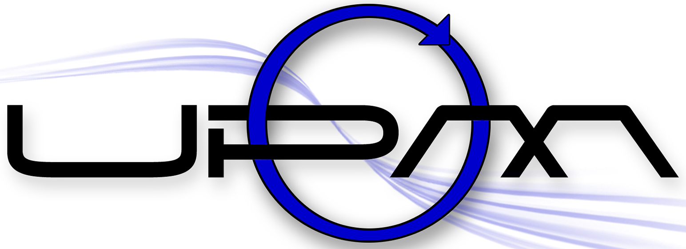
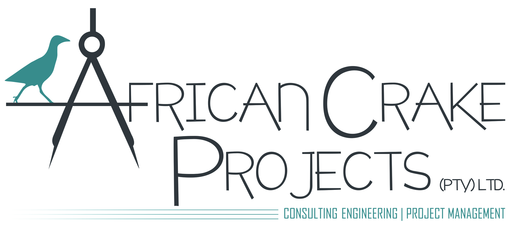

Independent water engineering for large-scale agriculture
Ant Consult designs irrigation, pumping and water distribution systems built for the lowest possible cost of ownership. Every design is shaped by the realities of your operation, and the people who will manage it.




An irrigation system is a 20 to 30 year commitment.
At Ant Consult, every design decision is made with one goal in mind: the lowest possible cost of ownership over the life of the system. That means practical engineering that reduces operating costs, supports efficient management, and delivers reliable performance for decades.
Of the total irrigation and water system lifecycle cost lies in OPEX. We design for lowest possible OPEX, not CAPEX.
Electricity cost reduction over system lifetime by sizing systems for the lowest lifecycle cost, not lowest possible CAPEX.
Payback period on CAPEX to install a lifecycle cost optimised system. Beyond this is profit.
If water is central to your operation, this is for you.
When you're making a capital investment that will shape your operation for decades, independent engineering advice matters.
Our recommendations are based on what's right for your operation, not on the equipment being sold.
Commercial Growers
You know your crop and your water. We bring the hydraulics: systems sized for your yield targets, your tariff and the team that runs them day to day.
Agricultural Corporates
Board-ready numbers before capital is committed. Independent feasibility, lifecycle cost models and design standards you can apply across every site in the portfolio.
Project Developers
Engineering that survives due diligence. Phased masterplans, defensible CAPEX and OPEX, and documentation lenders and investors can price risk against.
Farm Operators
The system you inherited, running better. We measure pressure, uniformity and pump efficiency, then recommend the smallest change that returns the most.
Engineering across the full life of a water system
Feasibility studies
Evaluate project viability before committing capital. We assess development options against real financial metrics so you can invest with confidence, or redirect before it costs you.
Learn more →Masterplans
A phased development plan built around your operation. We turn feasibility studies into practical implementation plans that align technical priorities with financial reality.
Learn more →Commercial irrigation design
The right system for your crop, your land, your operation. We design drip, micro, centre pivot and sprinkler systems that are practical, reliable and engineered to minimise lifetime operating costs.
Learn more →Irrigation upgrades
Improve performance without replacing what still works. We assess low pressure, uneven application and ageing infrastructure to identify targeted upgrades that deliver the greatest return on investment.
Learn more →Bulk water supply
Move water efficiently from source to scheme. We design bulk pipelines and pump stations engineered for reliable operation, low lifecycle cost and straightforward maintenance.
Learn more →System assessments
Identify problems before they become expensive failures. We assess hydraulic performance, operational constraints and system reliability to recommend practical improvements that extend the life of your infrastructure.
Learn more →Tools, guides and insights for better engineering decisions
Irrigation Design Checklist
The questions to settle before you commit capital. A field-tested checklist for planning a new scheme.
Download →Irrigation ROI Calculator
Model the lifetime cost of a system and compare design options against real financial return.
Open tool →Fit-for-purpose design
Why the cheapest system rarely stays the cheapest, and how to design for the decades that follow.
Read article →Engineering our clients can build on
With your engineering mind, you were able to solve it. I think it was a very direct approach, solution-driven.
Your lightweight service is appealing. We have used big consultants and never felt like we were on top of their priority list.
What can we help you achieve?
Talk to our engineers about practical, cost-effective agricultural water systems built around your operation.